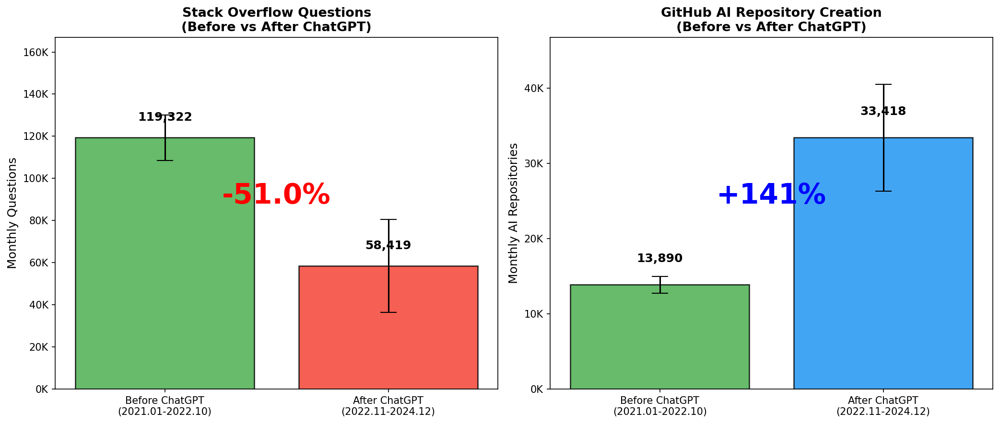
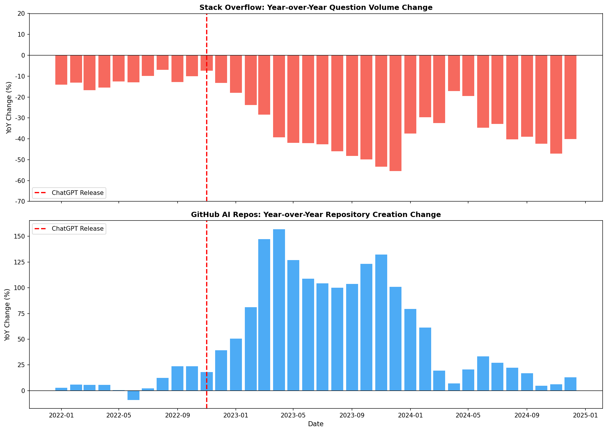
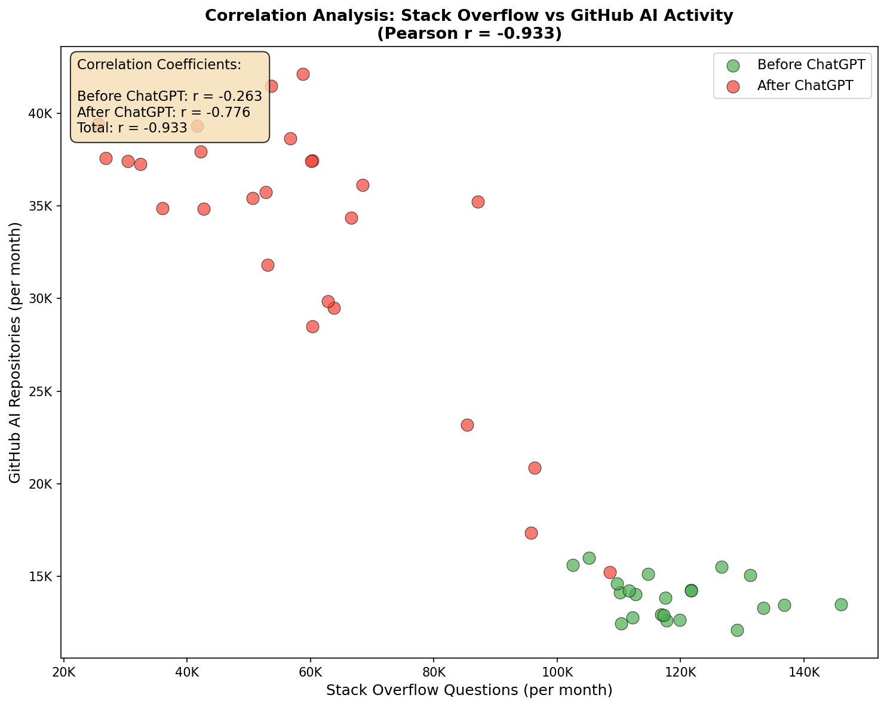
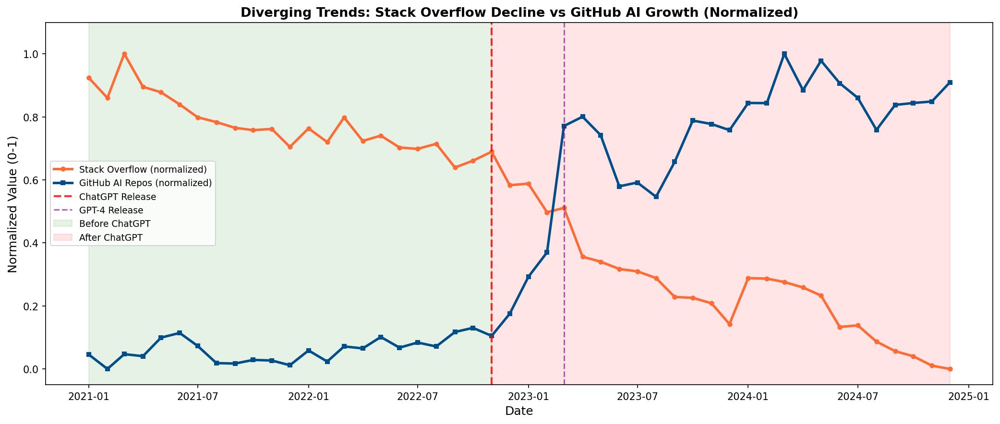

AI 도구가 개발자 생태계에 미치는 영향 분석
ChatGPT 출시 전후, Stack Overflow와 GitHub 데이터 기반 실증 분석
한양대학교 ERICA 스마트융합공학부 스마트ICT융합전공
AI+X: R-Py컴퓨팅 · 프로젝트
AI+X: R-Py컴퓨팅 · 프로젝트
Python
R
Pandas
Matplotlib
데이터 분석
개인 프로젝트
About Project
본 연구는 2022년 11월 ChatGPT 출시 이후 소프트웨어 개발 생태계의 변화를 실제 데이터로 정량 분석합니다. GitHub의 AI 관련 레포지토리 약 185만 개와 Stack Overflow 질문 데이터를 기반으로, ChatGPT 출시 전후 개발자 행동 패턴의 변화를 통계적으로 검증했습니다. 질문은 줄고 레포지토리는 늘어나는 뚜렷한 역상관 관계를 데이터로 확인했습니다.
주요 성과
- Stack Overflow 질문 수 · ChatGPT 출시 후 51% 감소 (t-test p < 0.001)
- GitHub AI 레포지토리 · ChatGPT 출시 후 141% 증가 (t-test p < 0.001)
- 상관관계 · Pearson 상관계수 r = -0.933 (매우 강한 음의 상관)
- 통계적 유의성 · 모든 검정에서 p-value < 0.001로 유의미한 변화 확인
Results
분석 결과 시각화입니다.

시계열 추세 — Stack Overflow 질문 · GitHub 레포 생성량 추이

ChatGPT 출시 전후 비교 — 평균 수준 변화

전년 대비(YoY) 증감률

상관관계 분석 — r = -0.933 음의 상관

정규화 트렌드 — 두 지표의 교차 추세
Methodology
| 단계 | 설명 |
|---|---|
| 데이터 수집 | GitHub API · Stack Overflow Data Dump (2021–2025, ChatGPT 출시 전후) |
| 전처리 | Pandas·NumPy로 월별 집계, AI 분야별(LLM·DL·CV·NLP·RL) 분류 |
| 통계 검정 | t-test로 출시 전후 평균 차이 검정 (p < 0.001) |
| 상관 분석 | Pearson 상관계수로 질문 수–레포 수 관계 분석 |
| 시각화 | Matplotlib·Seaborn 시계열·비교·상관 그래프 |
Tech Stack
개발 환경
- 언어 · Python 3.8+, R 4.5
- 분석 · Pandas, NumPy
- 시각화 · Matplotlib, Seaborn
분석 기법
- 데이터 소스 · GitHub API, Stack Overflow Data Dump
- 통계 검정 · t-test 기반 전후 비교
- 상관 분석 · Pearson 상관계수
- 시계열 · 추세·정규화 트렌드 분석
- 분류 · LLM·Deep Learning·CV·NLP·RL 카테고리